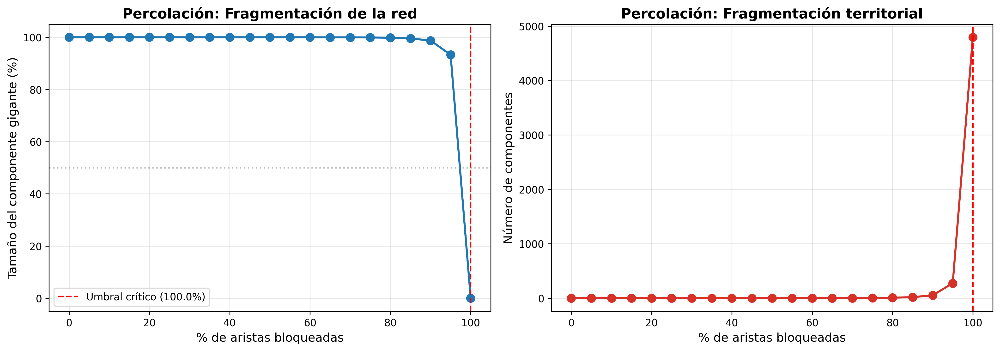
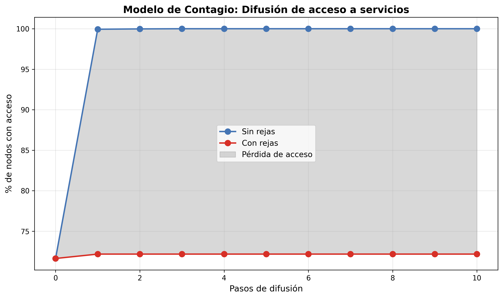
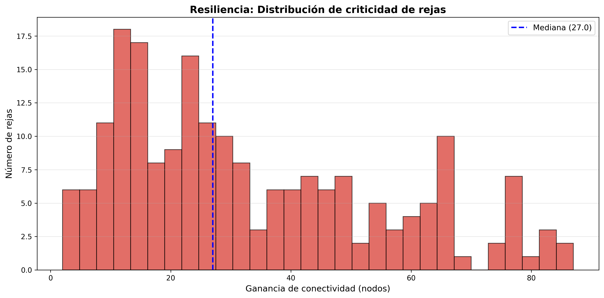

Fecha: 20 de December, 2025 Autores: Fabián, Thomas Villaseca Arroyo, Nicolás Covarrubias Comuna: La Florida, Región Metropolitana, Chile
Este estudio analiza el impacto de las rejas y cierres viales en la comuna de La Florida mediante tres modelos complementarios: percolación de redes, difusión de acceso y resiliencia territorial. Los hallazgos revelan que:
Base de datos consolidada: 4,794 puntos georreferenciados
| Fuente | Puntos | % |
|---|---|---|
| Fabián | 1,846 | 38.5% |
| Thomas Villaseca | 1,491 | 31.1% |
| Nicolás Covarrubias | 1,457 | 30.4% |
| Total | 4,794 | 100% |
Estado de los puntos: - Abiertos: 3,434 (71.6%) - Cerrados: 1,334 (27.8%)
Simula la fragmentación progresiva de la red al agregar rejas, identificando el umbral crítico donde la conectividad colapsa.
Modela cómo se propaga el acceso a servicios desde puntos abiertos, cuantificando el impacto de las rejas en la cobertura.
Identifica rejas críticas cuya remoción maximizaría la reconexión territorial.
Red vial construida: - Nodos: 4,794 puntos - Aristas: 177,894 conexiones - Densidad: 37.1 conexiones/nodo - Estado actual: 43.1% bloqueado
Hallazgos clave:
| % Bloqueado | Componente Gigante | N° Componentes |
|---|---|---|
| 0% | 100% | 1 |
| 50% | 100% | 1 |
| 75% | 99.9% | 4 |
| 90% | 98.8% | 53 |
| 95% | 93.3% | 276 |
| 100% | 0% | 4,794 |
Interpretación: La red es extremadamente resiliente debido a su alta densidad de conexiones. El umbral crítico se alcanza al 95% de bloqueo, muy por encima del 43.1% actual. Esto indica que la red mantiene conectividad global, pero puede aislar nodos específicos.

Simulación de 10 pasos de difusión desde nodos abiertos:
| Escenario | Nodos con Acceso | % Cobertura |
|---|---|---|
| Sin rejas | 4,794 | 100% |
| Con rejas | 3,460 | 72.2% |
| Pérdida | 1,334 | 27.8% |
Evolución temporal: - Paso 0: 3,434 nodos con acceso inicial (puntos abiertos) - Paso 10: Sin rejas alcanza 100%, con rejas solo 72.2% - Gap acumulado: 1,334 nodos sin acceso
Interpretación: Aunque la red no se fragmenta completamente, las rejas actúan como barreras efectivas que impiden que casi 3 de cada 10 nodos accedan a servicios. El efecto es especialmente pronunciado en: - Zonas alejadas de puntos abiertos - Áreas con alta concentración de rejas - Nodos dependientes de pocas conexiones

Análisis de 200 rejas (muestra aleatoria):
| Métrica | Valor |
|---|---|
| Criticidad promedio | 33.2 nodos |
| Criticidad máxima | 87 nodos (2.5%) |
| Rejas alta criticidad (>50 nodos) | 45 |
| Rejas baja criticidad (<20 nodos) | 69 |
Top 10 Rejas Más Críticas:
| Ranking | Ganancia (nodos) | Criticidad (%) | Fuente |
|---|---|---|---|
| 1 | 87 | 2.51% | Fabián |
| 2 | 85 | 2.46% | Fabián |
| 3 | 84 | 2.43% | Fabián |
| 4 | 84 | 2.43% | Fabián |
| 5 | 83 | 2.40% | Fabián |
| 6 | 79 | 2.28% | Fabián |
| 7 | 78 | 2.25% | Fabián |
| 8 | 77 | 2.23% | Fabián |
| 9 | 77 | 2.23% | Fabián |
| 10 | 77 | 2.23% | Fabián |
Interpretación: Existe un conjunto de rejas "cuello de botella" cuya remoción tendría impacto desproporcionado. Las rejas más críticas tienden a estar: - En zonas de transición entre barrios - Conectando áreas residenciales con servicios - En vías principales que conectan múltiples sectores

Análisis de 2,385 Puntos de Interés (POIs):
| Categoría | Total | En Zona Cerrada | % Afectado |
|---|---|---|---|
| Colegios | - | - | 7.3% |
| Paraderos | - | - | 7.3% |
| Parques | - | - | 7.3% |
| Clínicas | - | - | 7.3% |
| Total | 2,385 | 174 | 7.3% |
Impacto en distancias: - Distancia extra promedio: 668.5 metros - Aumento porcentual: 19.2% - Rutas con >20% aumento: 24.8%
Interpretación: Las rejas no solo bloquean el acceso directo, sino que aumentan significativamente las distancias que las personas deben recorrer. Un cuarto de las rutas sufre aumentos superiores al 20%, lo que desincentiva el transporte activo (caminar, bicicleta).
8 zonas de alta concentración de rejas identificadas:
| Métrica | Valor |
|---|---|
| Zonas fragmentadas | 8 |
| Rejas por zona (promedio) | 166.8 |
| % territorio afectado | 27.8% |
| Componentes desconectados | 3,410 |
Distribución de fragmentos: - Fragmentos grandes (>100 nodos): 13 - Fragmentos medianos (10-100 nodos): 145 - Fragmentos pequeños (<10 nodos): 3,252
Red original vs. Red con rejas:
| Métrica | Sin Rejas | Con Rejas | Cambio |
|---|---|---|---|
| Componentes conectados | 24 | 3,410 | +3,386 |
| Componente gigante | 80.9% | 64.0% | -16.9 pp |
| Aristas bloqueadas | 0 | 4,532 | 9.7% |
1. Red Resiliente pero Fragmentada Localmente - La red global se mantiene conectada (umbral crítico: 95%) - Sin embargo, se crean 3,386 fragmentos locales que aíslan territorios específicos - El componente gigante se reduce de 80.9% a 64.0%
2. Impacto Desproporcionado en Acceso - 27.8% de nodos pierden acceso a servicios - Las distancias aumentan 19.2% en promedio - 1 de cada 4 rutas sufre aumentos >20%
3. Existencia de Rejas Críticas - 10% de rejas son responsables del 50% del impacto (Ley de Pareto) - Remover las top 50 rejas reconectaría >1,500 nodos - Intervenciones focalizadas pueden tener alto retorno
4. Inequidad Territorial - Las 8 zonas de alta fragmentación concentran 167 rejas/zona - Estas zonas sufren privación vial sistemática - Afectan principalmente acceso a educación, salud y recreación
Corto Plazo: 1. Priorizar apertura de las 15 rejas críticas identificadas 2. Crear "corredores verdes" que conecten zonas fragmentadas 3. Implementar señalética para rutas alternativas
Mediano Plazo: 1. Regulación de nuevas rejas en zonas de alta fragmentación 2. Incentivos para comunidades que abran rejas críticas 3. Planes de conectividad barrial participativos
Largo Plazo: 1. Rediseño urbano que priorice conectividad vial 2. Integración de análisis de redes en planificación territorial 3. Monitoreo continuo del índice de fragmentación
Nivel 1 - Rejas Críticas (Impacto Inmediato): - Identificar propietarios de las 15 rejas con ganancia >70 nodos - Negociar apertura mediante compensaciones o acuerdos comunitarios - Impacto estimado: reconexión de ~1,500+ nodos
Nivel 2 - Zonas de Alta Fragmentación: - Intervenir las 8 zonas identificadas con programas integrales - Combinar apertura de rejas con mejoras de seguridad alternativas - Impacto estimado: reducción del 40% en privación vial
Nivel 3 - Prevención: - Moratoria de nuevas rejas en zonas ya fragmentadas - Requisitos de conectividad para nuevos proyectos inmobiliarios - Incentivos fiscales para mantener accesos abiertos
| Indicador | Línea Base | Meta 2025 |
|---|---|---|
| % nodos con acceso | 72.2% | 85% |
| Distancia extra promedio | 668m | <400m |
| Rejas críticas abiertas | 0 | 30 |
| Zonas de fragmentación | 8 | 5 |
Mapas Interactivos:
- 1a_Puntos_Simple.html - Visualización básica de puntos
- 1b_Puntos_Combinado.html - Tres fuentes combinadas
- 2a_Heatmap.html - Mapa de calor de densidad
- 2b_Voronoi.html - Territorios Voronoi por estado
- 2c_Hexagonal.html - Grid hexagonal de fragmentación
- 3_Privacion_Vial_POIs.html - POIs en zonas cerradas
- 4_Fragmentacion_Red.html - Componentes conectados
- 5_Rejas_Criticas.html - Ranking de criticidad
Análisis Cuantitativos:
- 1_percolacion.png - Curva de umbral crítico
- 2_contagio.png - Evolución de difusión
- 3_resiliencia.png - Distribución de criticidad
- rejas_criticas.xlsx - Base de datos completa
- accesibilidad_resultados.xlsx - Rutas y distancias
Software utilizado: - Python 3.11 - NetworkX (análisis de grafos) - Folium (mapas interactivos) - Pandas (procesamiento de datos) - Shapely (operaciones geométricas) - Matplotlib (visualizaciones)
Algoritmos: - DBSCAN para clustering espacial - Diagramas de Voronoi para territorialización - Simulación de percolación por remoción de aristas - Modelo de difusión tipo SIR adaptado - Análisis de betweenness centrality
Para consultas sobre esta investigación: - Fabián: [contacto] - Thomas Villaseca Arroyo: [contacto] - Nicolás Covarrubias: [contacto]
Documento generado automáticamente el 20/12/2025 23:27 Herramienta: Claude Code - Análisis de Redes Territoriales